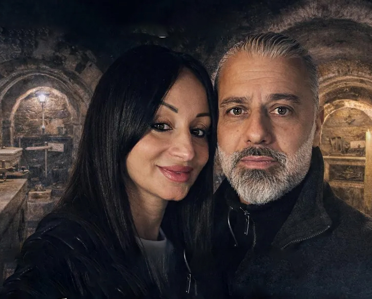

I Creatori
Benvenuti nel punto in cui il visibile incontra l’invisibile. Qui non si narrano favole: si documenta ciò che oltrepassa il confine tra il mondo umano e quello dei piani sottili.

La Strega Dony Sensitiva
Sensitiva nata, ricettiva, ponte tra i mondi. Non osserva il soprannaturale: lo attraversa e lo percepisce. Nella vita reale, Dony pratica attivamente l'antica arte dell'esoterismo: struttura rituali per canalizzare le energie, crea sigilli di protezione e utilizza elementi della natura (cristalli, resine come il Palo Santo, erbe) per purificare gli ambienti o aprire passaggi sottili. La sua intuizione non ha bisogno di spiegazioni: è istinto, forza viva, una connessione diretta che guida il duo durante le indagini sul campo.
Il Berserker Custode
Discendente della Beata Caterina Aliprandi, portatore di sangue consacrato e testimone razionale dell’impossibile. Nella vita reale, il Berserker unisce la caccia all'occulto alla precisione tecnologica: progetta e costruisce hardware avanzato (come la GhostBox v1.0 multi-sensore basata su ESP32 e l'EMF Hunter) per convertire le suggestioni in misurazioni tangibili, log dati ed evidenze verificabili. Custode della soglia: mantiene saldo il confine e interviene quando le forze tentano di passare.